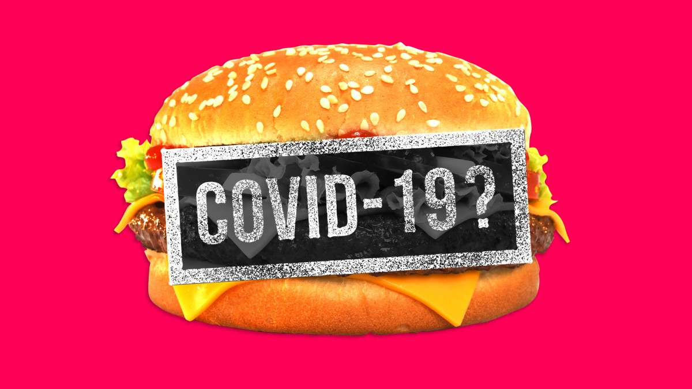
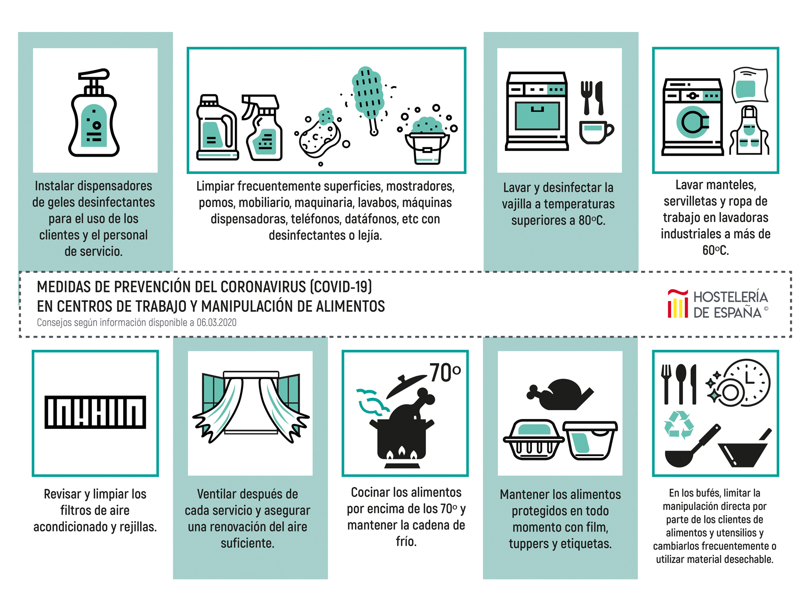

¿Son seguras las preparaciones y
envíos de comida rapida a domicilio durante la pandemia de coronavirus?

La enfermedad del coronavirus 2019 (COVID-19) es una enfermedad respiratoria causada por un virus llamado SARS-CoV-2. Los síntomas a menudo incluyen fiebre, tos o dificultad para respirar. Nuestra comprensión de cómo se propaga el virus evoluciona a medida que tenemos más información disponible, le sugerimos que visite el sitio web de los CDC para ver la información más reciente. Se cree que el virus se propaga principalmente de persona a persona:
*- Entre personas que están en contacto cercano (a una distancia de hasta aproximadamente 6 pies).
*- A través de gotitas respiratorias que se producen cuando una persona infectada tose, estornuda o habla.
Estudios recientes indican que el virus puede ser propagado por las personas antes de presentar síntomas o por personas que nunca llegan a presentar síntomas. Además, podría ser posible que una persona contraiga el COVID-19 al tocar una superficie u objeto que tenga el virus y luego se toque la boca, la nariz o posiblemente los ojos. Sin embargo, no se cree que esta sea la principal forma en que se propaga el virus. Los adultos mayores y las personas de cualquier edad con afecciones subyacentes graves pueden correr mayor riesgo de presentar complicaciones graves a causa del COVID-19.
Sin embargo, en comidas rapidas ALY hemos tomado y adaptado todas las medidas de cuidado y prevencion ante el COVID-10.

De igual formas nos hemos adaptado para hacer entregas de domicilio de forma sana, segura y las normas de bioseguridad en nuestros locales.